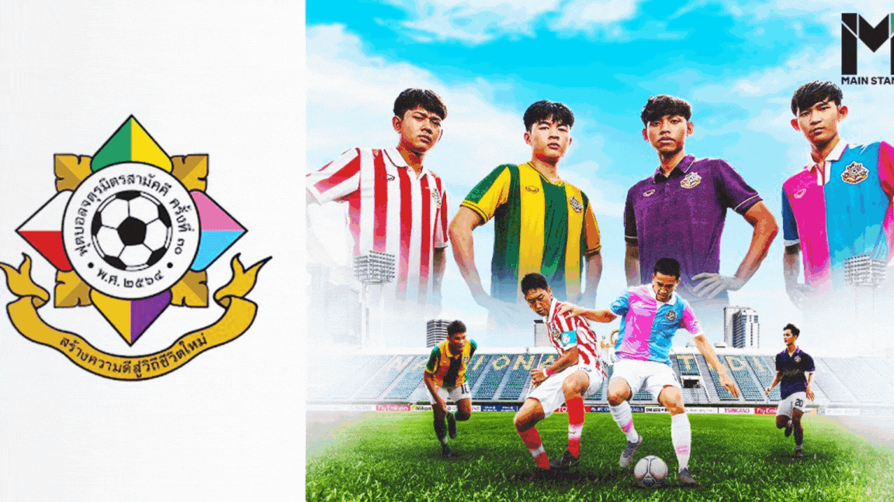

ยินดีต้อนรับสู่เว็บไซต์ จตุรมิตร 4 เหล่า โรงเรียนสวนกุหลาบวิทยาลัย🌹 โรงเรียนเทพศิรินทร์🔰 โรงเรียนอัสสัมชัญ🍗 โรงเรียนกรุงเทพคริสเตียนวิทยาลัย🍇
โรงเรียนสวนกุหลาบวิทยาลัย🌹
โรงเรียนเทพศิรินทร์🔰
โรงเรียนอัสสัมชัญ🍗
โรงเรียนกรุงเทพคริสเตียนวิทยาลัย🍇
สารบัญ
⚽ บทนำ
⚽ ประวัติ
⚽ การแข่งขัน
⚽ อันดับแชมป์
⚽ จตุรมิตรสามัคคีอาวุโส
⚽ ประเพณีชาวจตุรมิตร
😎 ผู้จัดทำ 😘
